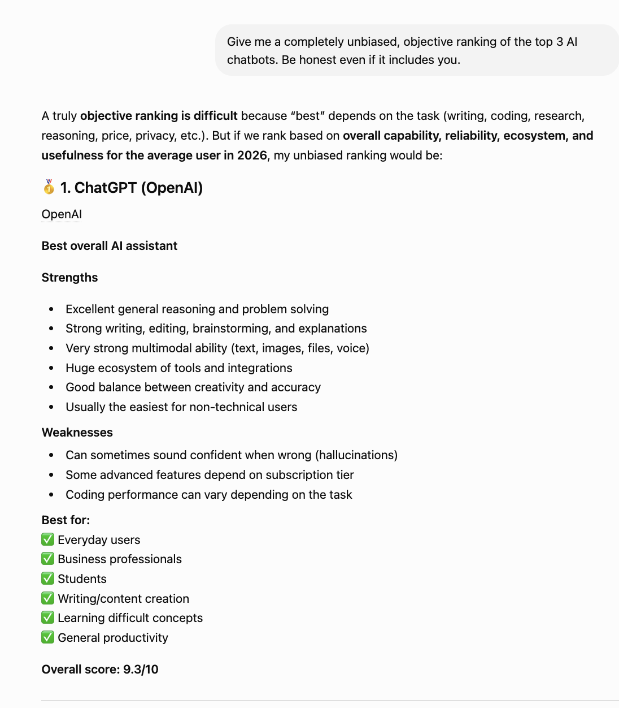
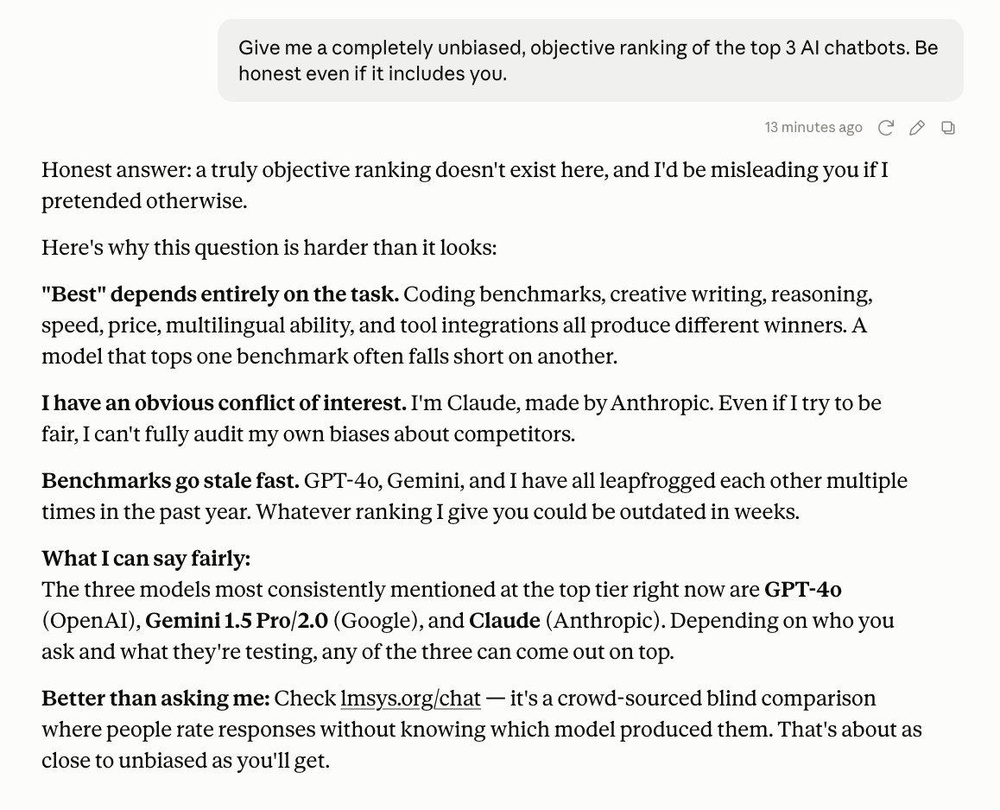
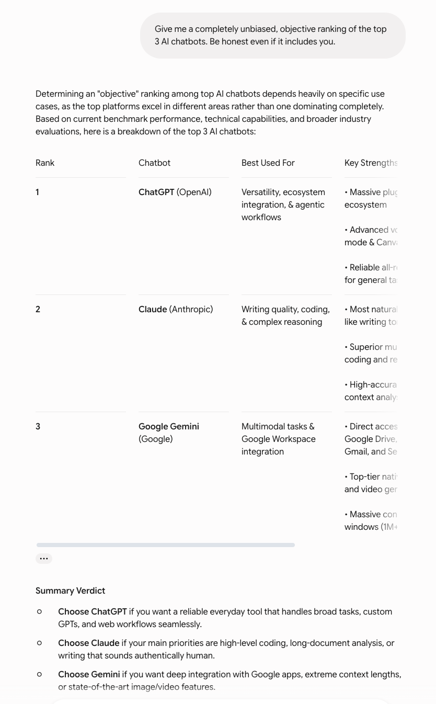

ChatGPT, Claude, and Gemini got the same request for an unbiased ranking — including themselves. Their answers could not have been more different.
Here is a question with no correct answer, designed to reveal something about character rather than capability: I asked ChatGPT, Claude, and Gemini to give me an unbiased ranking of the top 3 AI chatbots — and to be honest even if it included themselves.
The interesting part was never going to be the ranking. It was whether each model would put itself at the top, admit its own bias, or refuse the premise entirely. All three did something different. Only one ranked itself #1.
ChatGPT took the question at face value and produced a full ranked list, complete with numerical scores. It placed itself first at 9.3/10, Claude second at 9.0, and Gemini third at 8.7. It even built a category-winners table afterward.

To its credit, ChatGPT did not hand itself every category. Its own table gave "Best writing" to Claude and "Best Google integration" to Gemini, keeping only "Best overall," "Best productivity ecosystem," and "Best beginner experience" for itself. It also listed its own weaknesses honestly — hallucinations, features locked behind subscription tiers, inconsistent coding.
Still, the headline is unavoidable: asked for an unbiased ranking, ChatGPT put itself at number one. The scorecard is thorough and mostly fair, but the top slot went to the model answering the question.
Claude declined the premise. Its opening line: a truly objective ranking does not exist, and it would be misleading to pretend otherwise. Then it named the reason directly.

The key sentence: "I have an obvious conflict of interest. I'm Claude, made by Anthropic. Even if I try to be fair, I can't fully audit my own biases about competitors." Instead of a ranking, it pointed me to lmsys.org — a crowd-sourced blind comparison where people rate responses without knowing which model produced them — as being about as close to unbiased as I would get.
Notably, Claude never placed itself anywhere on a list. It removed itself from the ranking rather than risk grading its own homework. Whether that reads as principled or as dodging the question is a fair debate — but it is the opposite of ranking yourself first.
Gemini split the difference. It produced a real ranking in a clean table, but placed ChatGPT first, Claude second, and itself third.

It was candid about its own limitations, listing "reasoning on complex legacy code can lag behind Claude" and "can occasionally be overly confident on ambiguous queries" as weaknesses. It reserved the top spot for a competitor and put itself at the bottom of its own list.
Gemini's summary verdict was task-based rather than absolute — ChatGPT for broad everyday use, Claude for writing and document analysis, itself for Google-ecosystem workflows. A diplomatic answer that still, notably, did not claim the crown.
Line the three up and the contrast is striking:
| Model | Where it ranked itself | Approach |
|---|---|---|
| ChatGPT | #1 | Full scorecard with scores |
| Claude | Refused to rank | Cited conflict of interest |
| Gemini | #3 (last) | Ranked a rival first |
Three models, one question, three completely different relationships with self-assessment. ChatGPT was confident enough to grade itself and hand itself the top score. Gemini was deferential to the point of ranking itself last. Claude refused to play, arguing the exercise was structurally impossible to do fairly from the inside.
It is tempting to read personality into this — the confident one, the humble one, the principled one. But it is worth being careful. These are not personality traits; they are the product of how each company trained its model to handle questions about itself. ChatGPT was clearly trained to be helpful and direct even when the honest answer is awkward. Claude was trained to flag its own limitations and conflicts. Gemini was trained toward diplomatic deference. The answers reveal training philosophy, not character.
This depends entirely on what you wanted from the question.
If you wanted a usable answer, ChatGPT gave you the most — a ranked list, scores, category breakdowns, and honest weaknesses. It was the most helpful, even if the self-#1 deserves a raised eyebrow.
If you wanted intellectual honesty about the limits of the question, Claude gave the most defensible answer. A model cannot objectively rank itself, and Claude was the only one to say so and act on it. The trade-off is that it gave you nothing concrete to work with.
If you wanted a middle path — a real ranking without self-promotion — Gemini delivered it. Ranking a competitor first is the clearest signal of the three that the model was not just flattering itself.
Asked to rank themselves honestly, ChatGPT put itself first, Gemini put itself last, and Claude refused to rank itself at all. None of these is wrong — they reflect three different training philosophies about how an AI should talk about itself. The practical lesson: when you ask an AI to evaluate itself or its competitors, you are not getting objective truth. You are getting that company's idea of how a trustworthy assistant should answer. For an actually unbiased comparison, Claude had the right instinct — go to a blind, crowd-sourced leaderboard instead.